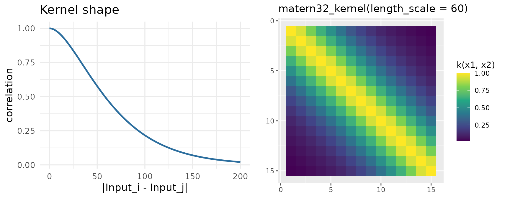
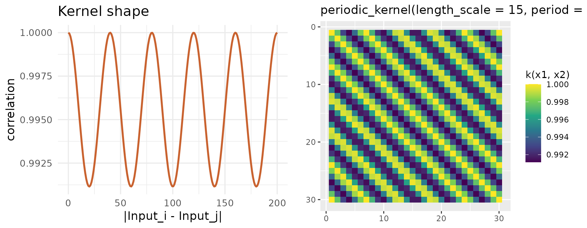

Using a kernel other than Squared Exponential
Source:vignettes/06_kernel_choice.Rmd
06_kernel_choice.RmdThe SE kernel assumes very smooth correlation. Nothing else in the pipeline depends on that choice – swapping the constructor is enough.
| Kernel | Use when |
|---|---|
matern12_kernel() |
Rough, non-smooth correlation |
matern32_kernel(), matern52_kernel()
|
Intermediate smoothness, more realistic than SE for noisy biological signal |
periodic_kernel(length_scale, period) |
Cyclical structure (e.g. circadian, seasonal) |
linear_kernel() |
A trend rather than a bump/dip |
Two worked examples below, each with the kernel’s
correlation-vs-distance shape next to
keRnel::plot_kernel()’s heatmap of the same kernel over the
actual feature positions – the 1D curve on the left is exactly what the
2D banding on the right is built from.
shape(kernel, d) is the vectorized elementwise shape
function every stationary kernel provides –
pairwise(kernel, x1, x2) reduces to
shape(kernel, distance_function(x1, x2)), so this is the
same correlation a heatmap cell would show, just as a 1D curve over
distance alone:
kernel_shape_df <- function(kern, lag_max, label) {
lag_seq <- seq(0, lag_max, length.out = 200)
data.frame(lag = lag_seq, correlation = shape(kern, lag_seq), kernel = label)
}Matern 3/2: rougher than SE
set.seed(6)
kern_true <- variance_kernel(variance = 10) * matern32_kernel(length_scale = 60)
data <- simu_db_kernel(kernel = kern_true, nb_id = 15, nb_group = 2, nb_sample = 8,
diff_group = 3, var_sample = 3, range_input = c(0, 200),
integer_input = TRUE, input_grid = TRUE)
p_shape <- ggplot(kernel_shape_df(matern32_kernel(length_scale = 60), 200, "Matern 3/2"),
aes(lag, correlation)) +
geom_line(linewidth = 1, color = "#2C6E9E") +
labs(title = "Kernel shape", x = "|Input_i - Input_j|", y = "correlation") +
theme_minimal(base_size = 13)
p_heat <- plot_kernel(matern32_kernel(length_scale = 60), unique(data$Input))
grid.arrange(p_shape, p_heat, ncol = 2)
kern <- variance_kernel(variance = 1) * matern32_kernel(length_scale = 50) +
white_noise_kernel(noise = 1)
g1 <- data[data$Group == unique(data$Group)[1], ]
prior_mean <- mean(g1$Output)
hp_opt <- fit_kernel(kern, g1, prior_mean = prior_mean, prior_cov = 1)
kern_opt <- kupdate(kern, variance = hp_opt[["variance"]],
length_scale = hp_opt[["length_scale"]], noise = hp_opt[["noise"]])
posterior <- posterior_mean(data, kern_opt, mu_0 = prior_mean, lambda_0 = 1)
group_diff(posterior)
#> Metric: per_feature_metric(wasserstein_metric(), power = 0.5)
#>
#> 1 2
#> 1 0.000000 2.646277
#> 2 2.646277 0.000000Periodic: cyclical structure
Same calls, periodic_kernel(length_scale, period) –
correlation now oscillates with distance instead of decaying
monotonically:
set.seed(6)
kern_true <- variance_kernel(variance = 10) * periodic_kernel(length_scale = 15, period = 40)
data <- simu_db_kernel(kernel = kern_true, nb_id = 30, nb_group = 2, nb_sample = 8,
diff_group = 3, var_sample = 3, range_input = c(0, 200),
integer_input = TRUE, input_grid = TRUE)
p_shape <- ggplot(kernel_shape_df(periodic_kernel(length_scale = 15, period = 40), 200, "Periodic"),
aes(lag, correlation)) +
geom_line(linewidth = 1, color = "#C9622F") +
labs(title = "Kernel shape", x = "|Input_i - Input_j|", y = "correlation") +
theme_minimal(base_size = 13)
p_heat <- plot_kernel(periodic_kernel(length_scale = 15, period = 40), unique(data$Input))
grid.arrange(p_shape, p_heat, ncol = 2)
kern <- variance_kernel(variance = 1) * periodic_kernel(length_scale = 15, period = 40) +
white_noise_kernel(noise = 1)
g1 <- data[data$Group == unique(data$Group)[1], ]
prior_mean <- mean(g1$Output)
hp_opt <- fit_kernel(kern, g1, prior_mean = prior_mean, prior_cov = 1)
kern_opt <- kupdate(kern, variance = hp_opt[["variance"]], length_scale = hp_opt[["length_scale"]],
period = hp_opt[["period"]], noise = hp_opt[["noise"]])
posterior <- posterior_mean(data, kern_opt, mu_0 = prior_mean, lambda_0 = 1)
group_diff(posterior)
#> Metric: per_feature_metric(wasserstein_metric(), power = 0.5)
#>
#> 1 2
#> 1 0.000000 1.994096
#> 2 1.994096 0.000000The heatmap’s diagonal bands repeat every ~40 units, matching the kernel shape’s oscillation on the left – an SE or Matern kernel could not produce this pattern regardless of its length scale.
Takeaways
- The kernel constructor is the only thing that changes between kernel
choices –
fit_kernel(),posterior_mean()and every downstream metric are constructor-agnostic. - The kernel shape plot is a direct preview of the correlation structure the fit will assume – a monotonically decaying shape cannot capture periodic data, and vice versa.
- Every kernel here still benefits from a
+ white_noise_kernel(...)term for the same numerical-stability reason as the SE case.